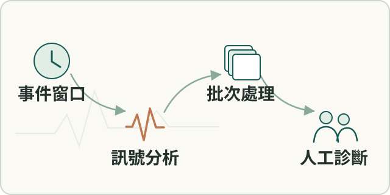

場域分析
大規模設備事件分析
依事件窗口選取資料，建立訊號分析、批次處理與現場工程師交接流程。
- 我的角色
- 本人與現場工程師及品保對齊設備、格式及事件範圍，採完整 DB 加事件窗 WAV，用批次腳本串接分析與人工審查。

工作流程示意（點圖放大）要解決的問題
波形量大且沒有交接 SOP，需選出有決策價值的事件並保留可回查資料。
輸入、處理與產出
- 輸入
- 完整事件資料庫，以及需要深入分析的事件窗波形。
- 處理方式
- 依事件定位波形，以批次腳本串接工具、平行處理、累積圖與說明初稿。
- 產出
- 人工逐頁核對的事件報告與可重跑交接流程。
適用範圍
事件選取範圍之外不宣稱已診斷；既有訊號算法與AI草稿保留各自歸屬。
核心問題與我的做法
保留完整事件歷史，只搬回需要的波形
現場原始資料量大，要求全部波形回傳會壓垮傳輸與分析；只看畫面又缺少可驗證依據。
保存完整資料庫，以事件時間定位需要深入分析的波形窗口。 本人定義事件導向選取策略，與FAE及品保對齊配置、資料格式、命名和交接方式。
完成事件分析與多輪報告，形成可重複的交接流程；未選時段不宣稱已診斷，亦無法據此估計全時段漏報。
把離散工具接成能重跑的交付管線
既有工具能做個別分析，卻缺少從事件清單到累積圖及報告的一致工作流。
補上資料整理、工具調度與人工診斷之間的工程流程。 本人以批次腳本串接環境、事件定位、波形整理、平行處理與合併圖，再人工核對AI協助起草的說明。
完成多輪報告與 FAQ 修訂，保留從資料選取、中間圖表到人工審查的重跑流程，支援後續交接。
成果與驗證
完成多輪事件報告及可重跑交接流程，未選時段及全設備健康狀態不由此推定。
SQLite · Windows batch · multiprocessing · PRPD